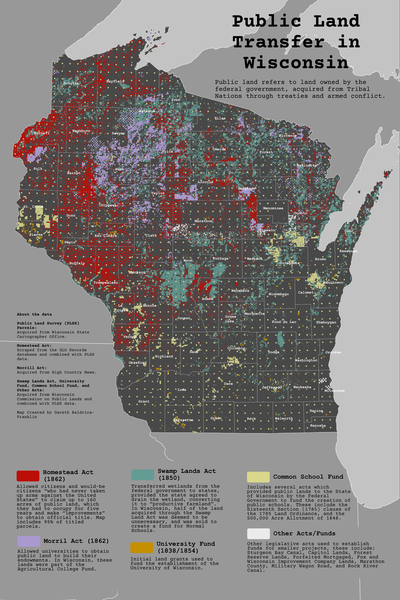

A map of how Wisconsin's Public Lands were acquired from Tribal Nations. This map and these data were created for the 2026 UW Cartography Lab Design Challenge, Visualizing Dispossession, Envisioning Land Back. The challenge tasked students to work with a variety of archival maps and data, including the data that went into this map.

2026 Gareth Baldrica-Franklin baldricafran@wisc.edu